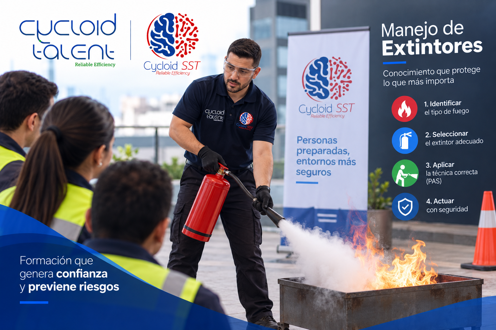
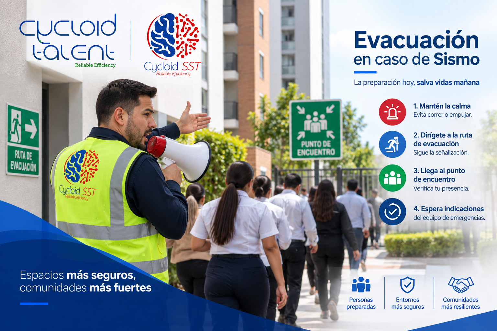
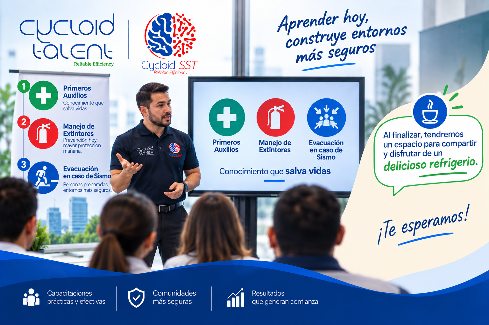

01 · PRIMEROS AUXILIOS
Atención inicial segura
Reconoce riesgos, aplica medidas de bioseguridad, realiza una valoración primaria y conoce cómo responder ante heridas, quemaduras y otras situaciones frecuentes.
Capacitación en brigada de emergencia
Gratuita para nuestros clientesPlazo máximo de inscripción: 24 de septiembre de 2026
Prepárate para actuar con seguridad, calma y criterio en los primeros minutos de una emergencia. Una formación práctica para proteger a las personas y fortalecer la respuesta de tu organización.
Cupo sujeto a la programación disponible. Sin costo para clientes Cycloid Talent.
Lo que aprenderás
El programa aborda los fundamentos de la atención inicial, la prevención y el control de riesgos. Llevarás herramientas claras para identificar una situación, pedir apoyo y actuar de manera segura mientras llegan los organismos de emergencia.
Reconoce riesgos, aplica medidas de bioseguridad, realiza una valoración primaria y conoce cómo responder ante heridas, quemaduras y otras situaciones frecuentes.

Comprende el origen del fuego, sus clases y el tipo de extintor adecuado. Aprende el uso responsable de los equipos para enfrentar fuegos incipientes.

Identifica cuándo evacuar, cómo activar la alarma y qué hacer durante el desplazamiento hacia las rutas y puntos de encuentro establecidos.

Una experiencia completa
Queremos que aproveches la jornada con comodidad. La actividad incluye un espacio de refrigerio para recargar energías y compartir con otros participantes.
Refrigerio incluidoReserva tu lugar
Da el siguiente paso y registra tu participación en el formulario de inscripción para brigadistas.
Esta capacitación brinda fundamentos de atención inicial y no reemplaza la atención de personal de salud ni los protocolos de emergencia de su organización.